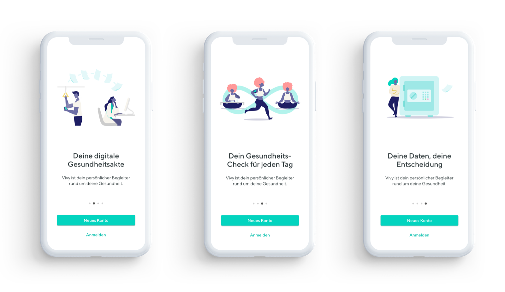
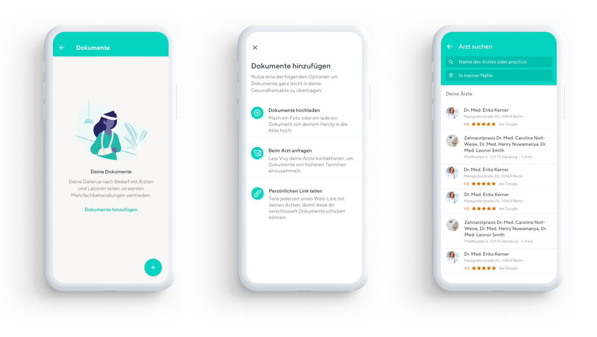
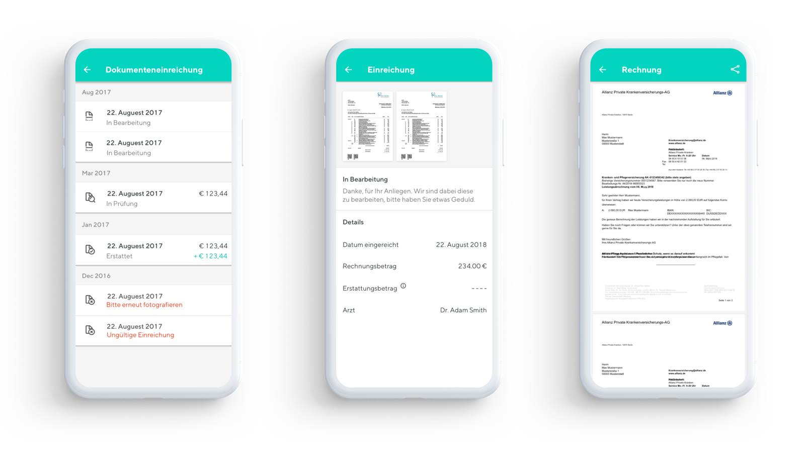
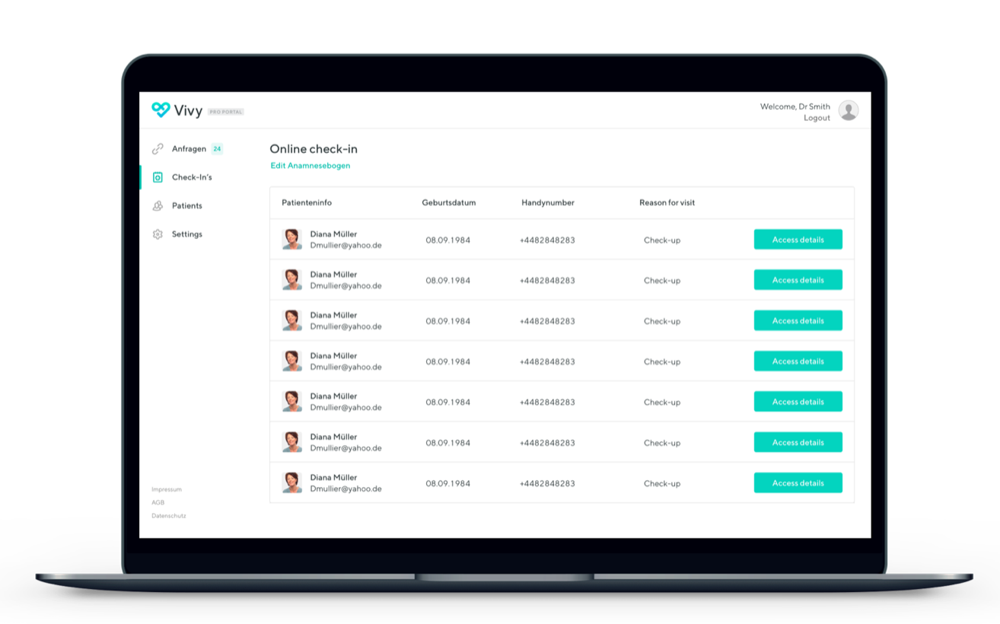

Document requestsRequests that reached completion.
← All work
Digital health · Allianz-backed · 3 min read
Vivy
A health record patients carry on their phone. As one of the first designers, I shaped the patient app and the doctors’ side of it.
- The problem
- In Germany, medical records are scattered across practices, paper files and fax machines. Getting your own results means phone calls and waiting rooms.
- What I did
- Designed the core flow for requesting, storing and sharing records, the portal doctors used to answer, and invoice claims, defined with Allianz.
- The result
- A request flow that stayed honest when doctors were slow to reply, and an invoice feature agreed with Allianz in a four-day sprint.

E2E
Encrypted end to end,
under the patient’s control
under the patient’s control
4 days
Design sprint in Munich
with Allianz to define invoicing
with Allianz to define invoicing
3
Sides of one record: patient,
practitioner and insurer
practitioner and insurer
01The problem
Your records exist. Just not anywhere useful.
Lab results sit with one provider, X-rays with another, discharge letters in a folder at home. Vivy gave patients one encrypted place to keep them, request new ones digitally, and share them with any doctor they chose.
Being one of the first designers meant more than screens: setting up research, defining principles, and building a shared way of deciding in a heavily regulated industry.

First run: setting the tone before a single document is added.
02Request and share
Request it, receive it, share it. Encrypted throughout.
A patient asks their GP for last month’s blood results and gets them on their phone: no calls, no waiting room, no paper. From there they can share the file with any practitioner in seconds, and they alone control who sees it.

Three ways into one flow: request a document, upload one, or find a doctor.

An early flow map: how a request reaches a doctor, and where it could quietly stall.
03Expectation management
Better to be honest than reassuring.
At launch, many requests went unanswered because most doctors had never heard of Vivy. The technology worked. The ecosystem wasn’t ready. So instead of a spinner, the status screen said what was pending, why it might be late, and what the patient could do meanwhile.
Patients coped far better with honest information than with false confidence.


A specific status, a reason and a next step, where a spinner used to be.
“Building a product that’s ahead of its supporting infrastructure teaches you something most UX courses don’t: how to manage the gap between vision and reality with dignity.”
James Ciclitira, on Vivy
04Invoice claims
Four days with Allianz. One feature, defined properly.
Private patients in Germany pay the bill first, then claim it back from their insurer: slow, paper-heavy and stressful. I ran a four-day sprint in Munich with Allianz to understand both sides before anyone designed a screen.
Day 01
Stakeholder mapping
Allianz’s internal workflows, and the legal rules for invoices.
Day 02
Patient pain points
Every frustration and delay in the current process.
Day 03
Rapid prototyping
Several submission flows, tested with patients and Allianz staff.
Day 04
Validation
A working prototype, and requirements design, tech and insurer agreed on.

The invoice flow that came out of the sprint.
05The practitioner side
It only works if doctors trust it too.
I designed the practitioner side as well: a secure, direct connection that felt professional enough for a doctor to put into their working day.


The patient’s phone and the practitioner’s portal: two contexts, one trust model.

Online check-in: patients arrive with the paperwork done, and staff see who’s due at a glance.
06How we measured it
Judged on trust, on both sides.
Provider adoptionPractices using it without changing how they work.
Patient trustPeople willing to store and share their records.
That’s all the work →
Back to the portfolio